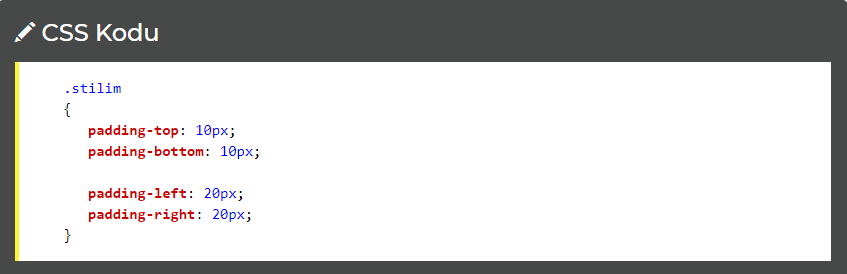
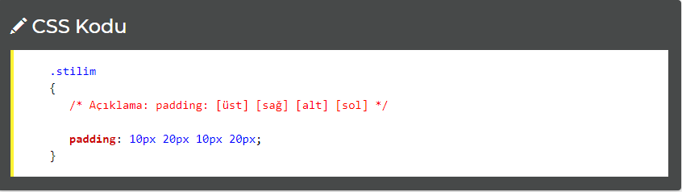
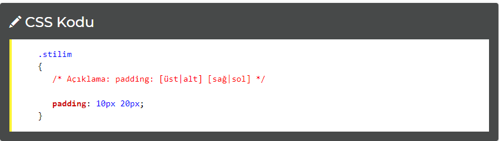

CSS İçten Boşluk (Padding)
Padding özelliği bir HTML elementinin kenarlarının içinde bir boşluk yaratmamızı sağlar.
Kenardan içerdeki bu boşlukları belirlerken üst, sol, alt ve sağ için ayrı ayrı belirlenebileceği gibi tek bir css koduyla da bunlar hızlıca belirlenebilir.
Tüm padding komutları:
padding - Hızlı kullanım
padding-top - Üstten boşluk
padding-right - Sağdan boşluk
padding-bottom - Alttan boşluk
padding-left - Soldan boşluk
Alabileceği değerler:
genişlik belirtme -px, em, pt gibi ölçülerle genişliği belirtme
yüzde kullanma (%) - İçerik genişliğine göre oranlar
Ayrı Ayrı İç Boşlukları Ayarlamak
Üst, sağ, alt ve sol boşlukları ayrı ayrı ayarlanabilir. Bunun için padding komutuna araya tire (-) koyarak ilgili yönün ingilizcesini yazıyoruz.

Yukarıdaki örnekte üst ve alt boşluklar içerden 10 piksel yüksekliğinde, sağ ve sol boşluklar içerden 20 piksel genişliğinde olacaktır.
İç Boşlukları Ayarlamanın Kısa Yolu
Sadece
padding kullanarak hepsi için geçerli tek bir tane değer yazabildiğimiz gibi sırasıyla üst, sağ, alt, sol şeklinde değerler girerek de yukarıdaki dört kodun tamamını tek kodda yazabiliriz:

Yukarı ve alt değeri ile Sağ ve sol değeri aynı olan ifadelerde şu şekilde de kullanabileceğimizi unutmayalım:

Yazdığımız bu kod, bir önceki yazdığımız kod ile aynı işlevi görecektir.
Padding ve Margin'in farkı ile ilgili
buradan bilgi alabilirsiniz.